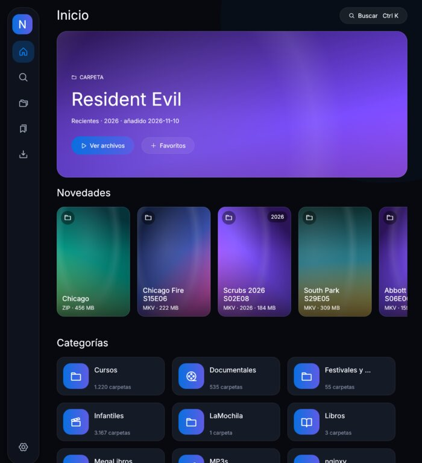
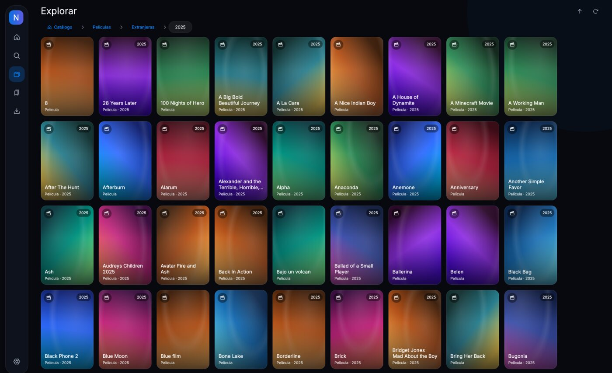

NovaFlix 2 es una aplicación nativa en Rust para explorar, buscar y descargar el catálogo de visuales.uclv.cu con portadas, estanterías y descargas reanudables. Habla HTTP o FTP a tu elección y entiende tu proxy. Sin cuentas, sin telemetría.
Linux y Windows · paquetes de ~11 MB · sin WebView, sin navegador embebido.

Reescrito desde cero en Rust: un cliente nativo, rápido y que se queda en tu equipo.
Portada destacada, estanterías con pósters reales y categorías. Pensada como una app de vídeo, no como un cliente de archivos.
Automático, HTTP o FTP. Cliente FTP propio de solo lectura con soporte de proxy SOCKS5.
El diagnóstico prueba DNS, puerto 21, túnel CONNECT y HTTPS y te explica con palabras llanas qué falla y qué hacer.
FTS5 con normalización leet y prefijos: Wick3d.For.Good.2025.1080p aparece buscando wicked.
Cola persistente, .part, reanudación por Range o REST, límite de velocidad y carpetas completas.
La caché es desechable; favoritos, listas y ajustes viven en una base aparte. Migra solo los datos de la v1.
NovaFlix 2.0.0-alpha.2 es una versión alpha: se distribuye desde Releases. Los repositorios APT y pacman se actualizarán con la primera versión estable.
Paquete nova-flix; el binario es novaflix.
curl -LO https://github.com/novatic-cu/NovaFlix/releases/download/v2.0.0-alpha.2/NovaFlix_2.0.0-alpha.2_amd64.deb sudo apt install ./NovaFlix_2.0.0-alpha.2_amd64.deb
Funciona en cualquier distribución reciente, sin instalar nada.
curl -LO https://github.com/novatic-cu/NovaFlix/releases/download/v2.0.0-alpha.2/NovaFlix_2.0.0-alpha.2_amd64.AppImage chmod +x NovaFlix_2.0.0-alpha.2_amd64.AppImage ./NovaFlix_2.0.0-alpha.2_amd64.AppImage
.tar.gzInstalador para Windows 10 y 11 (64 bits). No necesita WebView2. Sin firmar: SmartScreen puede avisar la primera vez.
NovaFlix_2.0.0-alpha.2_x64-setup.exe
El repositorio pacman seguirá ofreciendo la v1 hasta la primera estable de la v2. Mientras, usa el AppImage o el .tar.gz.
# tras la primera estable
sudo pacman -Sy novaflix-bin
Comprueba la descarga con SHA256SUMS, publicado en cada release.
¿Vienes de la v1? Tus favoritos, listas y ajustes se migran solos la primera vez, con copia de seguridad.
Ctrl K abre la búsqueda. Explora por carpetas, abre la ficha de un título y descarga lo que quieras. Tema oscuro y claro.

NovaFlix se distribuye bajo PolyForm Noncommercial 1.0.0: uso personal, educativo, investigación y entidades sin ánimo de lucro. El uso comercial requiere licencia.
Escríbenos y acordamos una licencia comercial, soporte o integración.